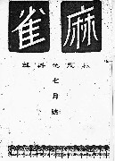
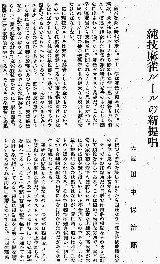

（２）純技麻雀ルールの新提唱
|
麻雀の殿堂で紹介した田中保治郎の論考。
※麻雀専門誌「麻雀（昭和６年７月号、林茂光麻雀研究所刊）」掲載。
 
昭和６年の論考なので、原文は旧漢字や旧仮名使い。そのままでは少し読みづらいかと思ったが、原文を尊重した。しかし明らかな誤植（下家→上家など）や、不明瞭な箇所、読句点などをを多少修正した。
|
麻雀を闘ふ時代が来た。三十一年＊01は麻雀を闘ふ時代だ。大満款・大々溝款＊02はルールから除かれた。清一色の加符＊03も姿を消した。摸運を禮賛した麻雀の鎌倉時代は過去のものとして歴史に残されるに過ぎない。麻雀セオリスト萬歳だ。ごんなに早く運麻雀から技麻雀に展開されるととは思はなかつた。日聯のリーダ−、其の他の先覚者に其の絶大なる努力も感謝せなけれぜならない。
然し現在のルールは未だ技麻雀として完全なものでない。その一つとして採點法を明示してろない事を掲げなければない。そればかりでなく競技の単位
即ち一荘で一単位にするのか、四荘であるのかそれさへ決めてゐない。こんなのんきなルールを使ってゐるのだからあきれる。＊04
「一荘を競技の単位としてゐる」と言ってゐる日聯の幹部があった。営業麻雀家が一荘宛料金を取り立ててゐるので、あんな誤解をしているらしい。営業麻雀を離れて麻雀競技会を見るに、日聯は四荘戦、関聯は三荘戦を慣習的にやっている。そしてその全競技の合計得點に依つて勝敗を決してゐるから、四荘なり三荘を競技成績決定の単位としていると見るのが本當だらう。
そこでその採點法だが、日聯では四荘の得點をそのまま通計して順位を決してゐる。これは極めて幼稚な方法で、當日の當り家が初心者でも優勝したり、堅実な老練家、高段者が常に良い成績を残し得ないといふ不合理なものである。
これは単に採點法のみの缺點ではないが、兎に角一般には不合理なものと認められてゐる。それで日聯では若き雀徒が一切にこぞつて合理的探點法の研究に手を付けかけたのだが、おそまき乍ら結構な事である。
関聯の採點法も不合理なものの一つだが、日聯程ガメクリを奨勵せない事は事實だ。関聯の採點法はプラスもマイナスも上位から八・四・二とし、一人プラス及一人マイナスには特に十の得點率を與へてゐる。そこへ得點四百副を越す毎に一を加へてその合計を全成績としてゐる。
得點に得點率を加味した點を特長としてゐるが、それが同時に短所となつてゐる。三四年、灘萬クラブで開いた関聯の競技会に僕の研究の採點法を参考に提出して、関聯採點法の變革を迫つた事があった。その時は研究して見ると云ふ事だつたが、未だ研究の結果を得られないのか、當時のままを墨守してゐる。まさか現在のもの唯一のものとも思つてゐないのだらうが。此の表はその時、参考の為め提出した採點法である。
プラスマイナス共六種に分け、それに依ってご三荘戦の成績を求むれば、第二表の様に三六四の結果が得られる。それを先づ合理的な順位を付したものである。同一順位が二人以上あった時は得點の多い方を上位とする方法である。
兎角競技法に比して採點法の研究が後れるのは、どう云ふ譯か。支那に採點法を書いた原書が見普らないからであらうか。日本麻雀は支那麻雀と別個のものだと壮語する人もある位だから、今に完全な方法も發表されることと思ふが随分心細い氣もする。
採點法は競技法と関連して研究されるものである。柱がぐらぐらしてゐては屋根が幾ら立派に葺かれてゐても、又
屋根から月が漏る様では柱がしつかりしてゐても、共に家として住めない。採點法と競技法と揃った無缺のルールが早く出現することを望みたい。
最近、競技本位の合理的ルールとして發表されたものが随分澤山あるが、いづれも大同小異、極めて不徹底なものばかりであるのは遺憾に堪へない。之れでは何時迄たってもふらふら段位や當り家の優勝が陰をひそめない事だらう。僕は此の位のルールに改正されても良い時代では無からうかと思ふ。
一、用具は現在のままで先づ良いが、籌馬を廃し
記録表を用いる。
二、座席、荘家、開門等、骸子は一度振りで良い。＊05
（註）手間が省ける。
開門の時、５，９は荘家、２，６，10は下家、４，８，12は上家、３，７，11は對家の前から數へればよい。それでも不便であれば、常に對家の前から數へて開門しておく位でよかろう。＊06
三 ポンは許すが吃は認めない。
（註）下手なものの下に居れば、良い牌をよく吃できるが、上手のに居れば好牌を下さないので定牌が後れると云ふ様な座席運を少なくすることが出来る。
四、倒牌、四風子連打、四槓算了、三家和等廃止。勿論包牌も不要。＊07
（註）時間を短縮する意味で、一度配牌すれば最後まで戰う事。
五、和了の形式は現在のままで良からうが、國士無双は要らない。
（註）十三幺九や七對子等、特例の和了は必要ない。
六 連荘なし。＊08
（註）ゲ−ムに要する時を成るべく均一ならしめる為。
七．得點は和丁者と放銑者との間に一點をやりとりし、他の二人は得失なし。自摸和は認める。加副や翻は廃止。自動的に包も消滅する。＊09
（註）現行各ルールに於いて共通的にもっとも不合理とされてゐるのは、和了を目的として戰ふ競技であるにも拘わらず、和了に遠ざかるがごとき麻雀（普通ガメクリと云ってゐる）を採ってたまたま出来た役を大役なりとして満款副を與へてゐる。四喜、三元、清老頭、字一色、九連寳燈、清一色等の如きも極めて和了に迂遠な方法に依って出来る事が多い役である。
それに引き替へ、平和は最も和了の捷經であって、最も技を主とした和了とせねばならないが、自摸すれば二十二符、他の放銃に依って漸く四十符を與へられるに過ぎない實に不合理なものである。
翻牌を三個集めた丈けで一翻を與へたり、天和を満款とするの如きに至っては運麻雀の極地と云はなければならない。放銃と和了の関係に就いても、採點上何等考慮を拂はれていない。結果として、そば杖を食って負けたという事が往々ある。また三翻以上の和了に對して包の規則があるが、手落ちだらけの大ざっぱなルールに嚴格な而も複雑な包則の必要は更にない。迷惑を受けるのは初心者丈だ。そんなに初心者をいぢめる必要はなからう。
八、一荘を四圏とすし、四荘（十六圏）を一勝負とする。
（註）真の競技の結果を得るには、數多くやらねばならない。四荘の成績同點のときは、和了數による。
九、競技會は各勝負の勝者のみを集めてトーナメント式に行ふ。
（註）現在の方法でも良いが、四荘戰では同一競技會で出合はない人があるからいけない。少なく共参加者の人數に相當する同数以上戰はなければリーグ戦の巧果はない。それは非常な時間が要るから、トーナメント式即ち勝ち抜き戦が良かろうと思ふ。
以上は最も理想とする方法で、現在のルールから見れば驚嘆するこことと思ふ程極端に走り過ぎて居るかも知れない。又麻雀と離れた別個の牌技と見る人もあるかも知れないが、現在の運麻雀を何時迄も支持する必要も無からうし運麻雀にあけば誰でも此の位のことは考へるだらう。
僕は運麻雀も結構だが、もっともっと充實した技麻雀の確率を望んでゐる。甚だ乱暴な書き方をしたが、技麻雀確率の為め、諸大家の寛恕と批評を願ひ度い。尚質問は直接小生に究に下されば適當な方法で詳細を説明する。
|
＊01 西暦1931年＝昭和６年
＊02 満貫（まんがん）に同じ。大満款は四翻満貫に対する表現（現在で云う役満貫（小四喜、四暗刻など）。大々溝款は大四喜などと云う感じ。
＊03 当時のルールには、清一色を和了すると、10符の特別加算があった。
＊04 １ゲームの単位についての指摘は卓越。
＊05 現在、開門箇所以外はサイコロ２度振りで決定しているが、当時の麻雀聯盟は開門箇所の決定も２度振りとしていた（現在でも日本麻雀連盟では２度振りを行っている）。
＊06 開門箇所恒常化の提唱は卓越。
＊07 包則、流局の廃止論は当時のルール論の最先端（包則の廃止は他の先人も提唱している）。
＊08 純麻雀や中麻など 現在でこそ連荘を廃したルールも存在する。しかしこの時代での廃止論は卓越。
＊09 "麻雀はアガることに意味がある。そこで一切のアガリ役を廃し
すべて１点のアガリとすべき"という主張。
|
いたる 投稿日：2006/11/04(Sat)
こちらでは初めまして。上記の文章を改変してみましたので投稿いたします。
・旧字旧仮名を新字新かなに訂正。
・明らかな誤字を訂正。
・わかりにくい語句を仮名表記に、もしくは文意を損なわない程度に改変しました。
麻雀を闘う時代が来た。三十一年は麻雀を闘う時代だ。大満款・大々溝款はルールから除かれた。清一色の加符も姿を消した。ツモ運を礼賛した麻雀の鎌倉時代は過去のものとして歴史に残されるに過ぎない。麻雀セオリスト万歳だ。こんなに早く運麻雀から技麻雀に展開されるとは思わなかった。日連のリーダ−、その他の先覚者の絶大なる努力にも感謝しなければならない。
しかし現在のルールは未だ技麻雀として完全なものではない。その一つとして採点法を明示していない事をあげなければならない。そればかりでなく競技の単位、つまり一荘で一単位にするのか、四荘であるのかそれさえ決めていない。こんなのんきなルールを使っているのだからあきれる。
「一荘を競技の単位としている」と言っている日連の幹部があった。営業麻雀店が一荘ごとに料金を取り立てているので、あんな誤解をしているらしい。営業麻雀を離れて麻雀競技会を見ると、日連は四荘戦、関連は三荘戦を慣習的にやっている。そしてその全競技の合計得点によって勝敗を決めているから、四荘なり三荘を競技成績決定の単位としていると見るのが本当だろう。
そこでその採点法だが、日連では四荘の得点をそのまま合計して順位を決めている。これは極めて幼稚な方法で、当日の当たり家が初心者でも優勝したり、堅実な老練家、高段者が常に良い成績を残し得ないという不合理なものである。
これは単に採点法のみの欠点ではないが、とにかく一般には不合理なものと認められている。それで日聯では若き雀徒がいっせいにこぞって合理的採点法の研究に手を付けかけたのだが、おそまきながら結構な事である。
関連の採点法も不合理なものの一つだが、日連程ガメクリを奨励しない事は事実だ。関連の採点法はプラスもマイナスも上位から八・四・二とし、一人プラス及一人マイナスには特に十の得点率を与えている。そこへ得点四百副を越すごとに一を加えてその合計を全成績としている。
得点に得点率を加味した点を特長としているが、それが同時に短所となつている。三四年、灘萬クラブで開いた関連の競技会に僕の研究の採点法を参考に提出して、関連採点法の変革を迫った事があった。その時は研究して見るという事だったが、未だ研究の結果を得られないのか、当時のままを墨守している。まさか現在のものが唯一のものとも思っていないのだろうが。
此の表はその時参考の為め提出した採点法である。（省略）
プラスマイナス共六種に分け、それによって三荘戦の成績を求めれば、第二表の様に三六四の結果が得られる。それをまず合理的な順位を付したものである（ママ）。同一順位が二人以上あった時は得点の多い方を上位とする方法である。
とかく競技法に比べて採点法の研究が後れるのは、どういう訳か。支那に採点法を書いた原書が見あたらないからであらうか。日本麻雀は支那麻雀と別個のものだと壮語する人もある位だから、今に完全な方法も発表されることと思うが随分心細い気もする。
採点法は競技法と関連して研究されるものである。柱がぐらぐらしていては屋根が幾ら立派に葺かれていても、又
屋根から月が漏る様では柱がしっかりしていても、共に家として住めない。採点法と競技法と揃った無欠のルールが早く出現することを望みたい。
最近、競技本位の合理的ルールとして発表されたものが随分沢山あるが、いずれも大同小異、極めて不徹底なものばかりであるのは遺憾にたえない。これでは何時までたってもふらふら段位や当たり家の優勝が陰をひそめない事だろう。僕はこの位のルールに改正されても良い時代では無いかと思う。
一、用具は現在のままでまず良いが、籌馬（点棒）を廃し
記録表を用いる。
二、座席、荘家、開門等、骸子は一度振りで良い。
（註）手間が省ける。
開門の時、５，９は荘家、２，６，10は下家、４，８，12は上家、３，７，11は対家の前から数えればよい。それでも不便であれば、常に対家の前から数えて開門しておく位でよかろう。
三 ポンは許すが吃は認めない。
（註）下手なものの下に居れば、良い牌をよく吃できるが、上手のに居れば好牌を下さないので手のまとまりが後れるという様な座席運を少なくすることが出来る。
四、倒牌、四風子連打、四槓算了、三家和等廃止。もちろん包牌も不要。
（註）時間を短縮する意味で、一度配牌すれば最後まで闘う事。
五、和了の形式は現在のままで良からうが、国士無双は要らない。
（註）十三幺九や七対子等、特例の和了は必要ない。
六 連荘なし。
（註）ゲ−ムに要する時を成るべく均一にする為。
七．得点は和了者と放銃者との間に一点をやりとりし、他の二人は得失なし。自摸和は認める。加副や翻は廃止。自動的に包も消滅する。
（註）現行各ルールに於いて共通的にもっとも不合理とされているのは、和了を目的として戦う競技であるにもかかわらず、和了に遠ざかるような麻雀（普通ガメクリといっている）を採って、たまたま出来た役を大役なりとして満款副を与えている。四喜、三元、清老頭、字一色、九連宝灯、清一色なども、極めて和了に遠い方法によって出来る事が多い役である。
それに引き替え、平和は最も和了への早道であって、最も技を主とした和了としなければばならないが、自摸すれば二十二符、他の放銃によってようやく四十符を与えられるに過ぎない実に不合理なものである。
翻牌を三個集めただけで一翻を与えたり、天和を満款とするようなことに至っては運麻雀の極地といわなければならない。放銃と和了の関係についても、採点上全く考慮を払われていない。結果として、そば杖を食って負けたという事がしばしばある。また三翻以上の和了に対して包の規則があるが、手落ちだらけの大ざっぱなルールに厳格なしかも複雑な包則の必要は更にない。迷惑を受けるのは初心者だけだ。そんなに初心者をいじめる必要はないだろう。
八、一荘を四圏（四周り）とし、四荘（十六圏）を一勝負とする。
（註）真の競技の結果を得るには、数多くやらねばならない。四荘の成績同点のときは、和了数による。
九、競技会は各勝負の勝者のみを集めてトーナメント式に行う。
（註）現在の方法でも良いが、四荘戦では同一競技会で出合わない人があるからいけない。少なくとも参加者の人数に相当する同数以上戦わなければリーグ戦の効果はない。それは非常な時間が要るから、トーナメント式すなわち勝ち抜き戦が良いと思う。
以上は最も理想とする方法で、現在のルールから見れば驚嘆しそうなほど極端に走り過ぎているかも知れない。又麻雀と離れた別個の牌技と見る人もあるかも知れないが、現在の運麻雀を何時までも支持する必要も無いだろうし運麻雀に飽きれば誰でもこの位のことは考えるだろう。
僕は運麻雀も結構だが、もっともっと充実した技麻雀の確立を望んでいる。はなはだ乱暴な書き方をしたが、技麻雀確立のため、諸大家の寛恕と批評をお願いする。なお質問は直接小生に下されば適当な方法で詳細を説明する。
|
r@PCLabo 投稿日：2006/11/07(Tue)
評価方法の形が見えて興味深いですね。
採点表というか得点表を見ると、まず分かるのは浮き沈みを重視する思想で、まだ自分の点棒と格闘しているのが読み取れました。純技麻雀の新提唱といっても、評価方法はいささかギャンブル的のようですね。プラマイが0なら得点も0とするあたりは分かりやすいですが。
その次に重視されているのが順位で、1順位につきプラマイが同じなら、5点か7点の差がつけられています。しかしこれはプラマイが一致した時に優劣をつけるための基準のようで、その次に素点がきていることを考えると立場が一貫していないですね…。
数点の差でつきうるプラスマイナスで評価を2分してしまうよりは、素点そのままの方が適切な気もします。
|
あさみ 投稿日：2006/11/08(Wed)
採点表の分析、ありがとう。
>浮き沈みを重視する思想で、まだ自分の点棒と格闘しているのが読み取れました。
>純技麻雀の新提唱といっても、評価方法はいささかギャンブル的のようですね。
現在でもそんな評価法が存在するくらいですから、当時としては不思議ではないかも。むしろ当時としては、よく出来ているという感じ。
|